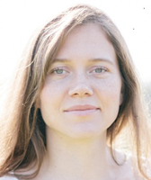
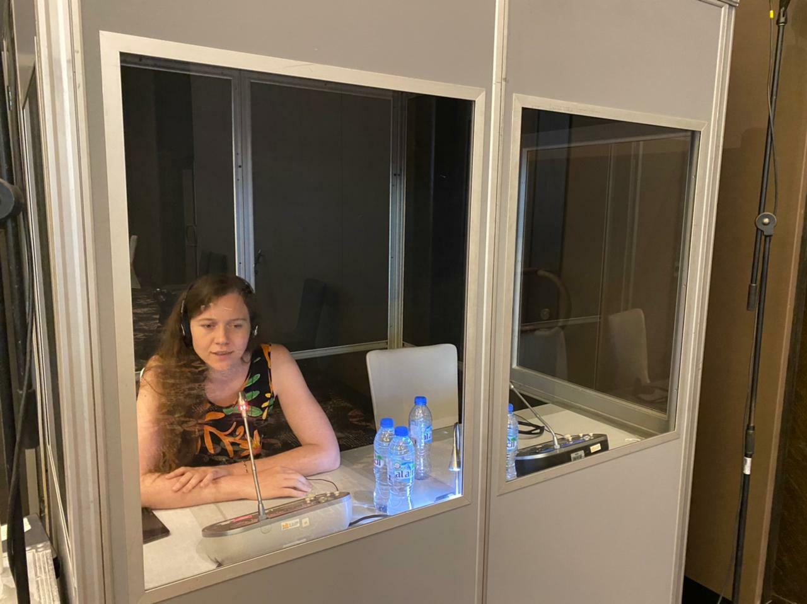
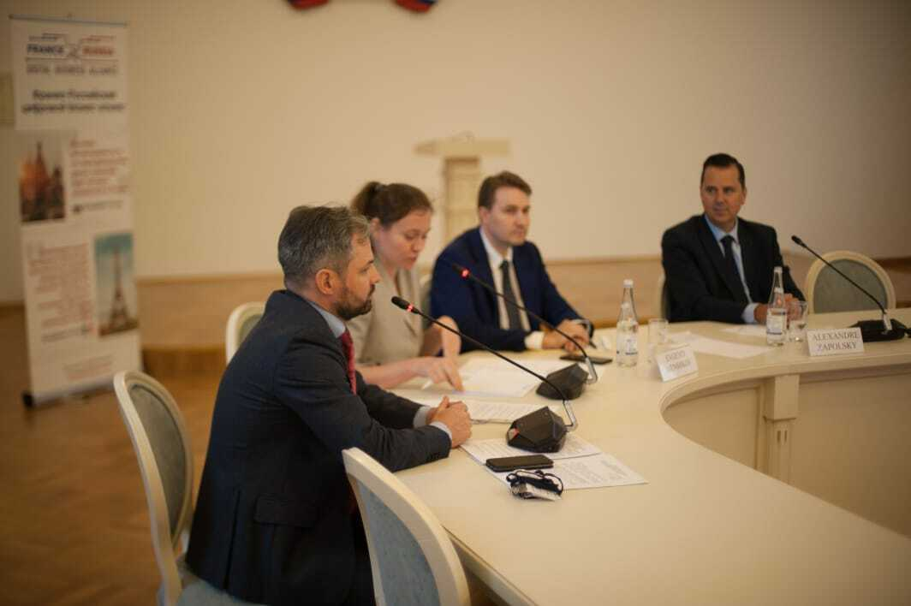
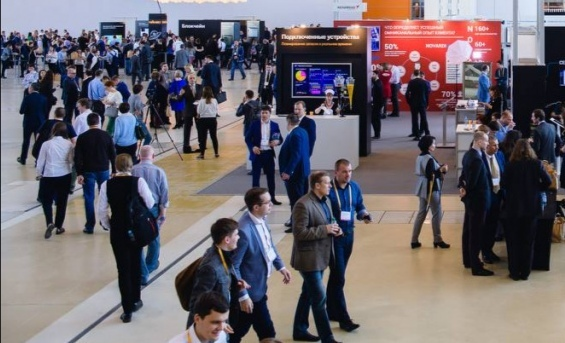
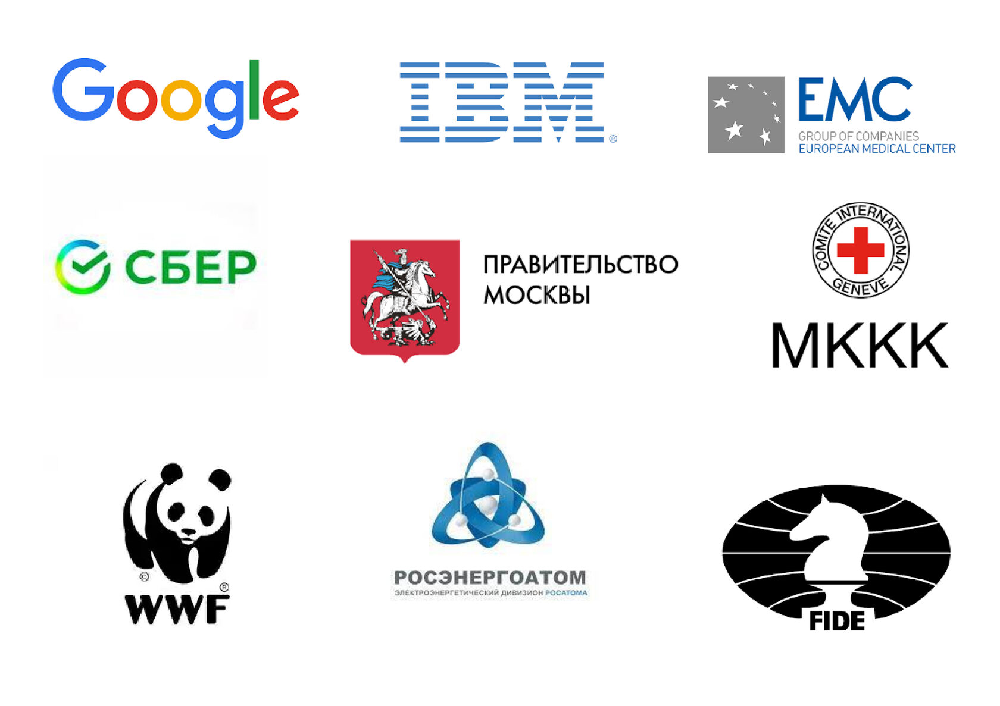
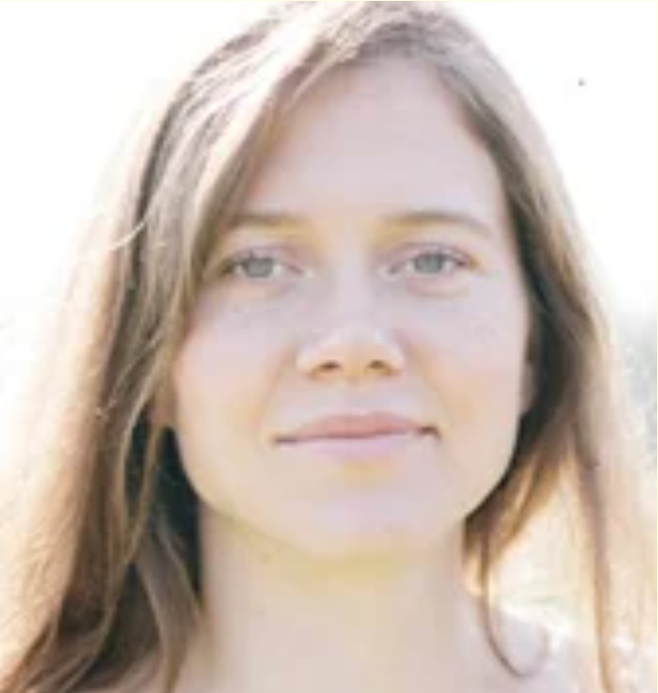

Устный переводчик RU-ENG-FR

Здравствуйте! Меня зовут Анастасия Палыга, я дипломированный синхронный и последовательный переводчик, работающий с русским, английским и французским языками в любых комбинациях. Я выпускница МГЛУ (московский ИнЯз им. Мориса Тореза) и магистратуры университета Сорбонны. Работаю с любыми тематиками, одинаково люблю как медицину/горное дело/сельское хозяйство, так и культуру/моду/гастрономию.

Осуществляется одновременно с речью выступающего. Необходимо специальное оборудование
для синхронного перевода (доступно для аренды через партнёрские компании). В силу
повышенной нагрузки данный вид перевода обычно выполняется двумя специалистами, которые
сменяют друг друга.
Если вам требуется несколько переводчиков, в том числе с другими/редкими языками,
то с удовольствием порекомендую проверенных коллег.

Выполняется без специального оборудования. Выступающий делает паузы, чтобы
дать возможность перевести сказанное. Переводчик использует скоропись для
записи продолжительных отрезков речи.
Если ваше мероприятие предполагает несколько параллельных сессий и вам требуется
несколько переводчиков, в том числе с другими/редкими языками, то с удовольствием
порекомендую проверенных коллег.

Лингвистическое обеспечение: подбор проверенных переводчиков с любыми языками, в том числе редкими; техническое обеспечение через партнёрские компании; координация и модерация; при необходимости - организация регистрации, кейтеринга.
Письменный перевод документов, редактирование и корректура текстов, лингвистические консультации, а также обучение и наставничество для начинающих переводчиков.

Более полная информация по опыту работы, в том числе по тематикам, не упомянутым выше, — по запросу.

Синхронный и последовательный переводчик